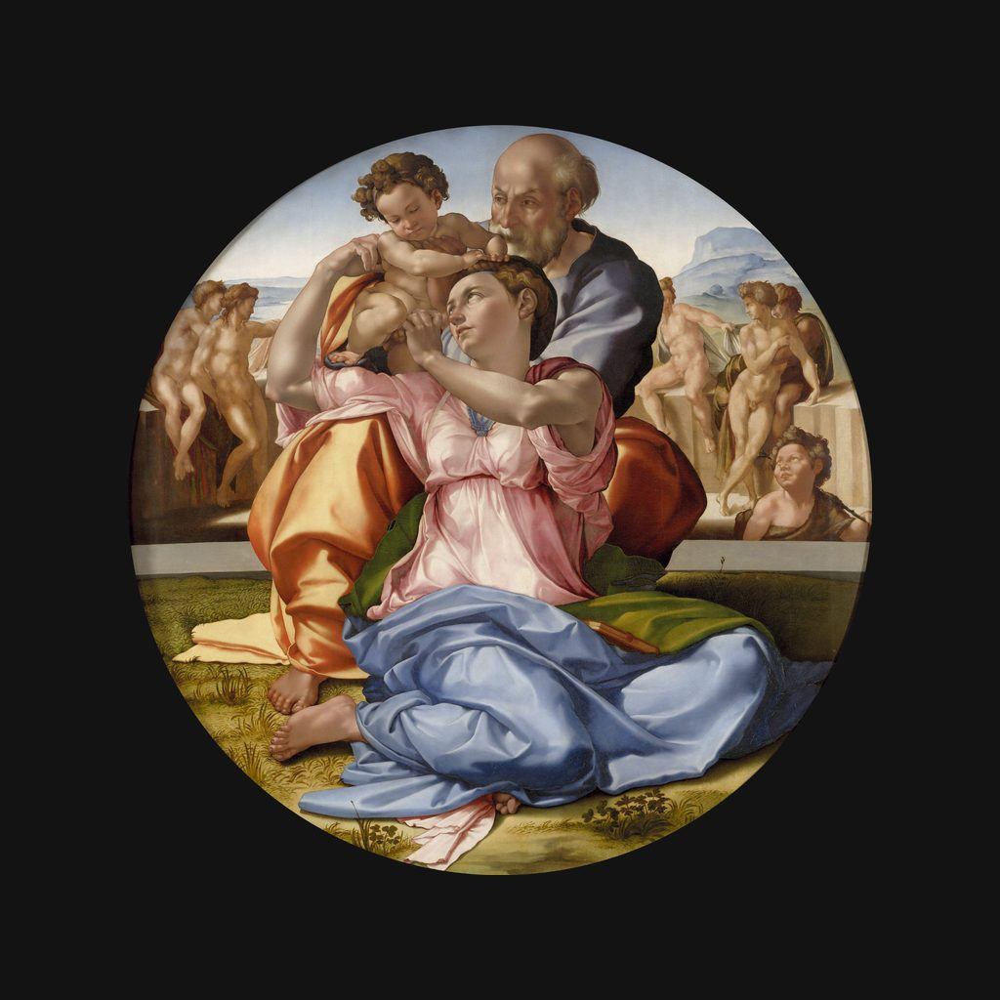

多尼圓畫
米開朗基羅 · 1505—1506年
Tondo Doni
解說節錄
聖母扭過身子，高高抬起雙臂，正和她的丈夫、耶穌的養父約瑟交接小耶穌。三個人的身體和手臂緊緊扣在一起，像一組雕塑。
這幅圓形的畫叫《聖家族》，通稱《多尼圓畫》，作者是米開朗基羅·博納羅蒂，烏菲茲美術館的目錄定在一五零五到一五零六年，木板油性蛋彩，直徑一公尺二十公分。米開朗基羅是雕塑家、畫家，也是建築師。畫這幅畫的時候，他和達文西、拉斐爾都活躍在佛羅倫斯。這是他現存唯一一件完成的木板畫。
— 國語講稿 · Artvery
完整解說約 4 分鐘，在 Artvery App 裡收聽。國語、粵語、內地普通話三種語音，館內對準作品即可辨識播放。
即將上架 App Store
App 即將上架，敬請期待。上架後免費下載，每座博物館單獨購買，一次購買永久使用。
作品資訊
- 作者
- 米開朗基羅
- 年代
- 1505—1506年
- 尺寸
- 120 × 120 公分
- 位置
- 烏菲茲美術館 · 米開朗基羅與拉斐爾展廳
烏菲茲美術館參觀攻略：必看名作與路線 · 烏菲茲美術館中文語音導覽